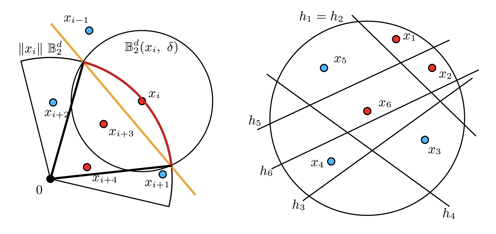

|
Srinath Mahankali I am an undergraduate student at the Massachusetts Institute of Technology (MIT) where I am advised by Pulkit Agrawal as part of the Improbable AI Lab. Email / CV / Google Scholar / LinkedIn |

|
Updates |
Research |

|
Norm-dependent convergence and stability of the inverse scattering series for diffuse and scalar waves
Srinath Mahankali, Yunan Yang Inverse Problems, 2023 paper / abstract We prove bounds on the convergence and stability of the inverse scattering series under different Sobolev norms, finding conditions under which the radius of convergence and stability are improved. |
|  |
Randomly Initialized One-Layer Neural Networks Make Data Linearly Separable
Promit Ghosal, Srinath Mahankali, Yihang Sun arXiv preprint, 2022 paper / abstract Randomly initialized one-layer neural networks, with high probability, make datasets linearly separable. |

|
The convexity of optimal transport-based waveform inversion for certain structured velocity models
Srinath Mahankali SIAM Undergraduate Research Online, 2021 paper / abstract Full waveform inversion with an optimal transport-based objective has superior convexity compared to the standard least-squares objective function for certain velocity models. |
|
Design and source code from Jon Barron's website. |